Input testuale
“Compilare” Musica

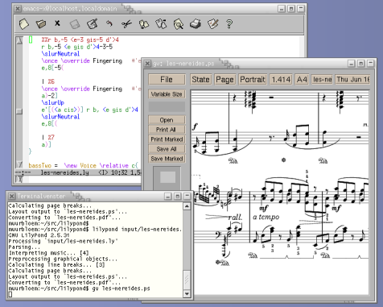
(clicca per ingrandire)
LilyPond è un sistema compilato: viene eseguito su un file di testo che descrive la musica. L’output risultante può essere visualizzato sullo schermo o stampato. In un certo senso, LilyPond è più simile a un linguaggio di programmazione che a un software grafico per la creazione di spartiti.
Non si scrive la musica trascinando le note da una barra degli strumenti grafica e mettendole su una partitura che si aggiorna in modo dinamico; si scrive musica digitando del testo. Questo testo viene interpretato (o “compilato”) da LilyPond, che produce degli spartiti di elevata qualità.
Chi è abituato alle interfacce grafiche dovrà imparare un nuovo modo di lavorare, ma ne vale assolutamente la pena se si considerano i risultati!
Nota: Presentiamo una rapida panoramica del nostro input testuale – non è complicato come sembra! Non c’è bisogno di comprendere ogni dettaglio di questi esempi; la nostra documentazione per i principianti si occupa di tutto questo a un ritmo molto più graduale.
È semplice come l’A B C
Le note vengono codificate con lettere e numeri. I comandi speciali sono inseriti con barre inverse (backslash).
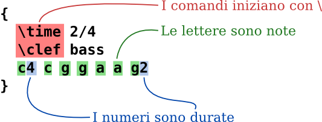
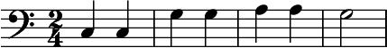
Le alterazioni si ottengono con nomi diversi: si aggiunge -is per
il diesis, e -es per il bemolle (questi sono i nomi delle note in
olandese, ma sono disponibili altre lingue). LilyPond calcola dove mettere
le alterazioni.
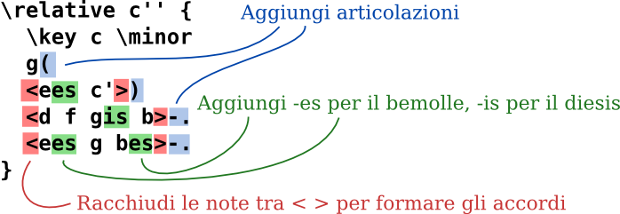
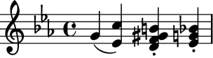
Musica Pop
Testo e accordi possono essere combinati per ottenere uno spartito semplificato:
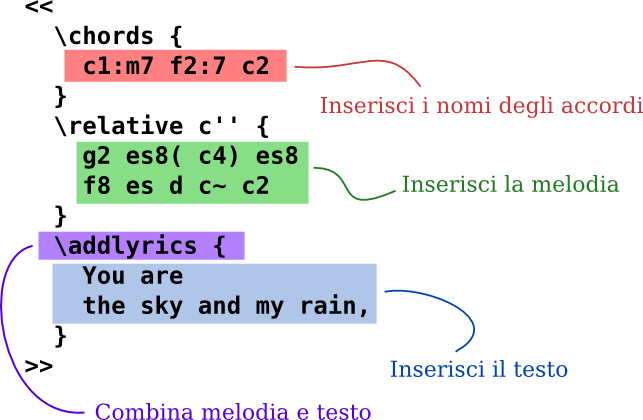
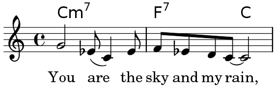
Parti per orchestra
Il file di input contiene le note del brano musicale. La partitura e le parti possono essere ottenute da un solo file di input, cosicché la modifica di una nota interesserà sempre la partitura e le parti. Per poter includere la stessa musica in più punti, occorre assegnare alla musica una “variabile” (un nome).
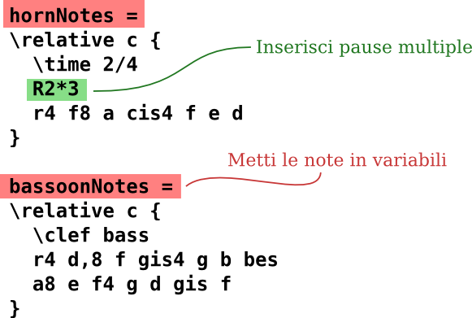
Questa variabile viene poi usata in una parte singola (qui trasposta, con pause abbreviate che si estendono per diverse misure):
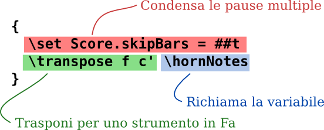
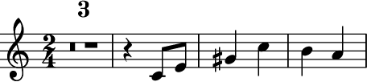
La stessa variabile viene utilizzata nella partitura completa (qui in altezza reale):
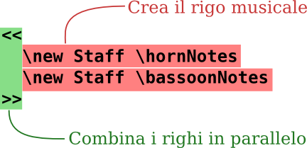
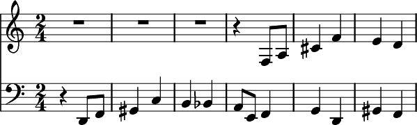
Documentazione per il principiante
Comprendiamo il fatto che molti utenti trovino questo modo di scrivere musica un po’ strano. Per questo motivo, abbiamo scritto un’ampia documentazione per aiutare i nuovi utenti, a cominciare dal manuale di Apprendimento. Il Manuale di Apprendimento è il luogo migliore da cui iniziare, perché molte domande trovano risposta prima ancora di manifestarsi!
Talvolta i nuovi utenti sono confusi, senza motivo, da alcuni aspetti del comportamento di LilyPond. Leggi la documentazione prima di pensare che LilyPond non stia funzionando bene.
Informazioni più approfondite sono disponibili nei Manuali.
Ben Lemon, un utente di LilyPond, ha creato una serie di video tutorial sul suo blog che sono rivolti ai nuovi utenti.
Editing facilitato

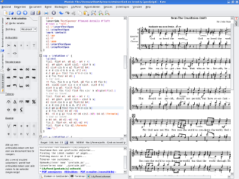
(clicca per ingrandire)
L’obiettivo primario di LilyPond è produrre spartiti di elevata qualità; creare un interfaccia grafica (GUI) ci distrarrebbe da questo scopo. Tuttavia esistono altri progetti che hanno lo scopo di rendere più facile la creazione di file di input per LilyPond.
Alcuni ambienti di editing includono l’evidenziatura della sintassi, il completamento automatico dei comandi, e modelli preimpostati. Altri programmi forniscono una vera e propria interfaccia grafica che consente la manipolazione diretta di una partitura grafica. Per maggiori informazioni, si veda Editing facilitato.
E ora?
Adesso sei pronto a scaricare LilyPond. Non sei ancora convinto? Leggi a proposito dell’ Editing facilitato.